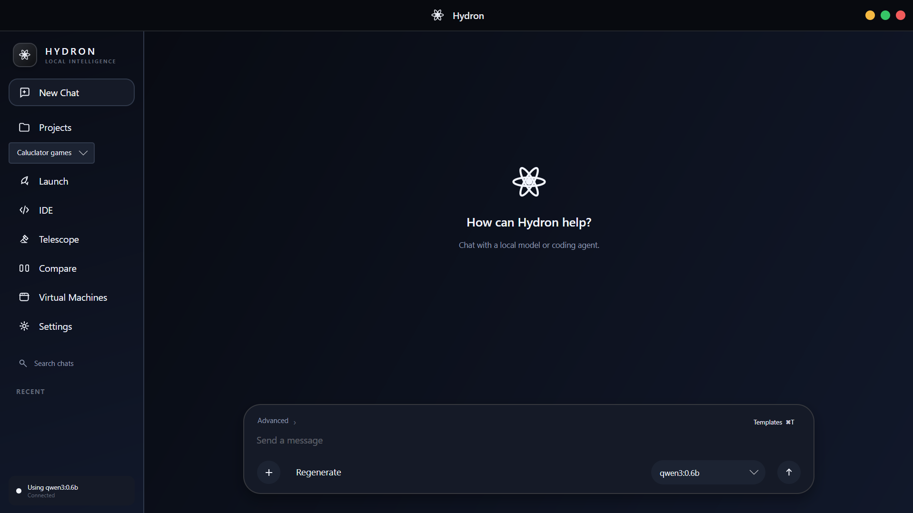
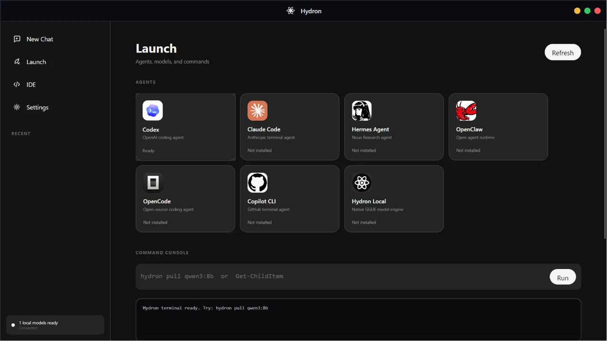
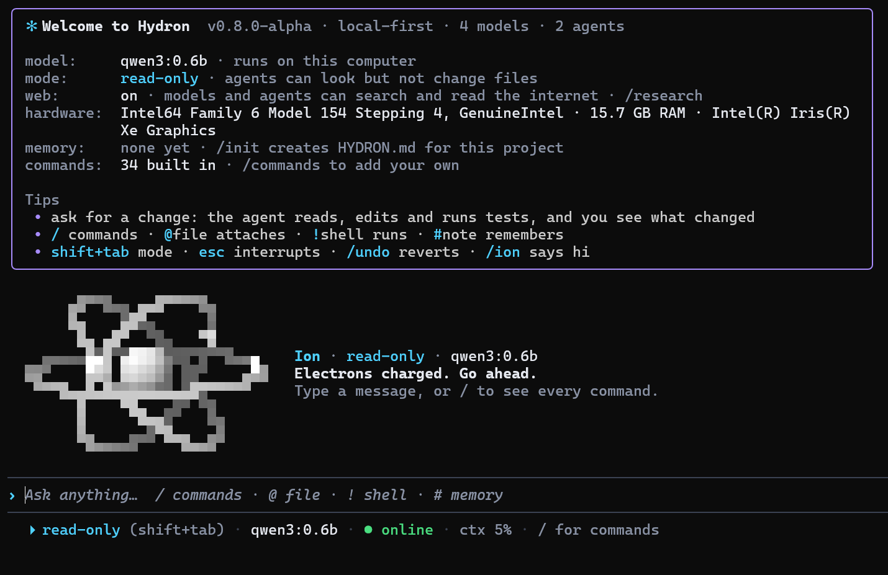
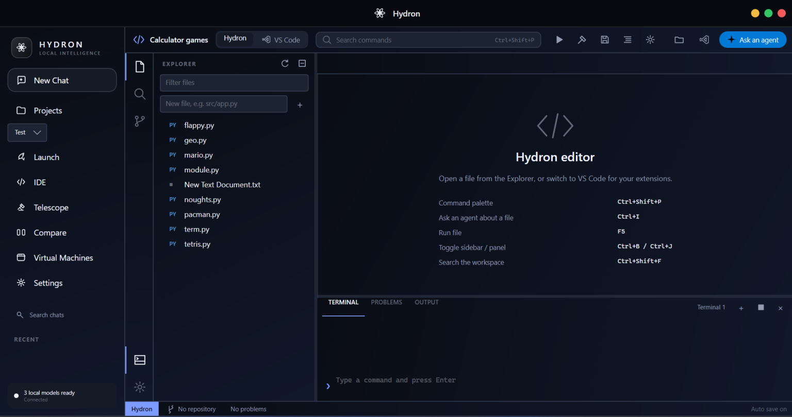

Local models
Download and run supported models like Gemma, Phi, Llama, Qwen, and DeepSeek. Local conversations never leave your PC.
Hydron is a desktop workspace for local AI. Run supported models on your PC, open the coding agents you already use, and work on your code — all in one focused app.

Chat with a local model or a connected coding agent.
Stop switching between a model runner, a terminal, and an editor. Hydron keeps them side by side.
Download and run supported models like Gemma, Phi, Llama, Qwen, and DeepSeek. Local conversations never leave your PC.
Hydron detects Codex, Claude Code, Copilot CLI, and other supported agents you have installed, and launches them in one place.
Open a folder, edit with syntax highlighting, search files, and run or build your project with output alongside.
Browse a curated catalogue, install with one click, and switch models mid-conversation. Start small and move up as your machine allows.

Run hydron in any shell for a full agent in your terminal. It starts read-only, so it can look but not change files until you switch modes, and /undo reverts any edit.
@file attaches files, ! runs shell commands, # saves notes to memoryhydron pull gemma3:4b
Hydron has no Hydron cloud. What happens on your machine stays on your machine, unless you choose a third-party agent or service.
No sign-up, login, email, or subscription is needed to use Hydron.
No analytics, usage tracking, crash reporting, or advertising identifiers.
Models, chats, and settings are stored on your PC and under your control.
Choose from ten visual presets, move navigation to either side, adjust density and rounding, and set how local models respond. Export your theme and bring it anywhere.

The Windows installer includes the Hydron desktop app, CLI, .NET runtime, and local model engine.